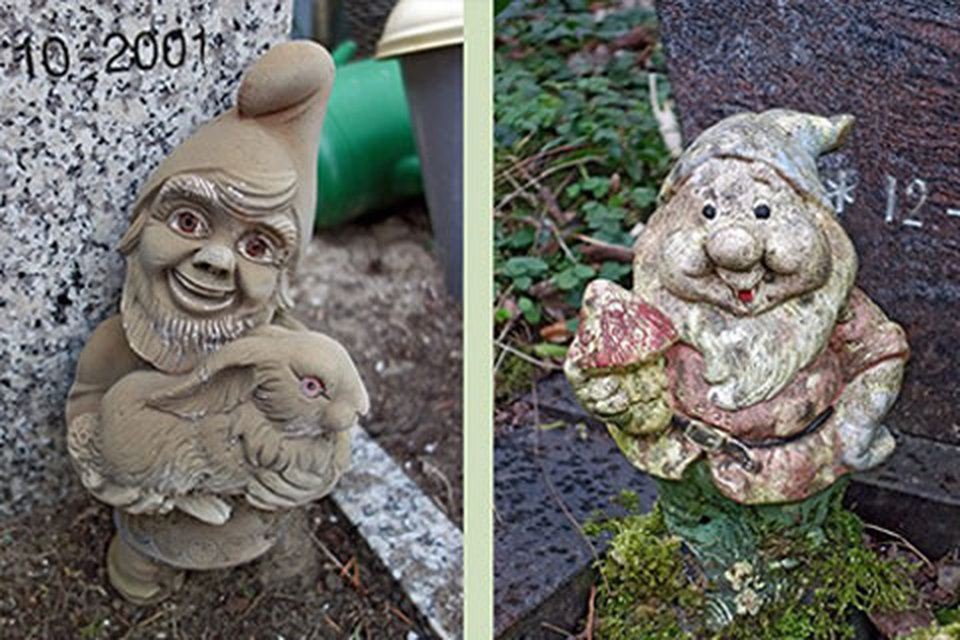
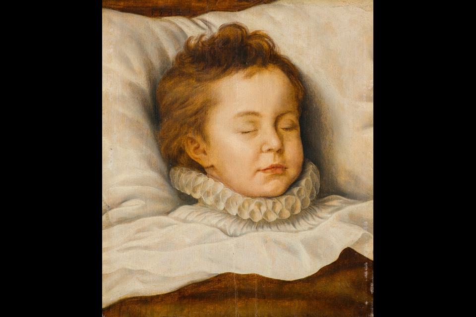
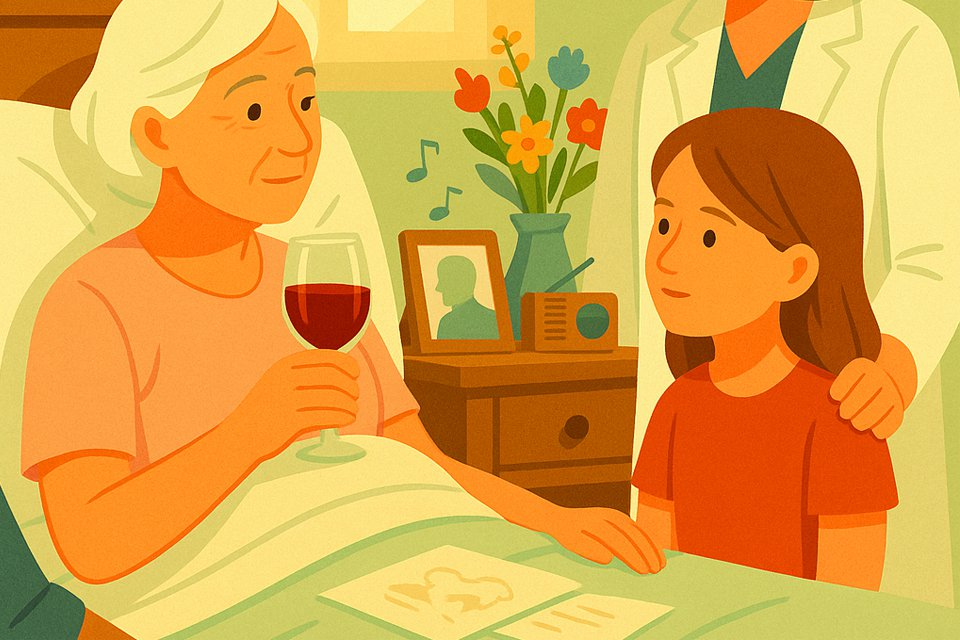

museum on tour
Huur een van onze pop-up expo's
Bekijk de vacature >
Bekijk het programma

multimediaal festival
22 &23 november: CORPUS
Nu te zien
* 26.09.2025
† 28.06.2026
Meer informatie
quote
Hoewel de dood het hoofdonderwerp is, ademt deze tentoonstelling vooral vrolijkheid.
Parool, 3 oktober 2025
Museum
di t/m zo 11-17 uur
Adres
De nieuwe Ooster, Kruislaan 124
1097 GA Amsterdam
Cafe Roosenburgh
di t/m zo 11-17 uur
Tickets >museum on tour
Huur een van onze pop-up expo's
Bekijk de vacature >
Bekijk het programma
multimediaal festival
22 &23 november: CORPUS
Aat Veldhoen is bekend van zijn kleurrijke en soms provocerende kunst, maar maakte ook prachtige, liefdevolle doodsportretten van recent overledenen, zoals zijn eigen moeder. En hij gebruikte vaak skeletten als model voor zijn werk. Om mensen (anders) te laten denken en meer te laten praten over de dood gingen we de stad in met een van 'zijn' skeletten en stelden we de vraag 'Wat is het mooiste dat jij kan zeggen over de dood?'
Bekijk alle foto's en v...
anna's boekentip
De Schedel - Jon Klassen
nu in tuinzaal
Grafseries door Arnold Weel
collectie
Otto van Veen
symposium | 27 nov 2025
Rituelen rondom Euthanasie
Een 'holten vat', 'krootje', 'zerrek' of 'houten overjas'. De doodskist heeft veel (lokale) benamingen. Student Karlijn Drexhage deed onderzoek naar de geschiedenis van de doodskist in Nederland. Van boomstam- tot paneelkist, van sober tot versierd, van gebruiksvoorwerp tot statussymbool. De oorsprong en geschiedenis van de Nederlandse doodskist is een fascinerend verhaal dat veel vertelt over onze veranderende omgang met de dood.
Lees meerquote
De tentoonstelling is zo mooi verzorgd. Echt de moeite om te bezoeken.
Hedy d'Ancona over de tentoonstelling Aat Veldhoen - Realist tot in de kist
recensie
Zo'n klein museum en dan toch zoveel in je bezoeker losmaken - ik vind het knap.
Eva Hoeke in haar column, 7/7/2025
De rondleidingen van Arboretum de Nieuwe Ooster zijn weer opgestart! Ontdek het prachtige gedenkpark en geniet van de flora en fauna onder begeleiding van een bomengids, iedere eerste zondag van de maand. Kom vroeg en geniet van een kopje koffie en worteltaart bij Cafe Roosenburgh.
Lees meerWe zagen al die verschillende manieren van afscheid nemen... In het museumcafe onstond er toen zomaar een mooi gesprek met mijn kinderen en kleinkinderen. Over hoe dat bij ons zou zijn, wat we daar voor beelden en gedachten bij hebben. Vooral de kleinkinderen bleken er heel onbevangen over te kunnen praten. Ik ben enorm dankbaar dat dit bij leven en welzijn heeft kunnen gebeuren. Dit museum is alle steun waard!
Steun Tot Zover